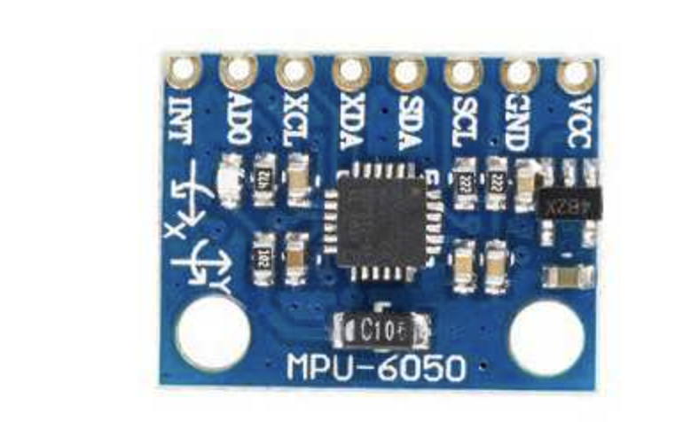

Local row/position numbers below are documentation aids, not manufacturer pin numbers. Electrical continuity is untested.
Header above chip, MPU-6050 text below; left to right:
| INT | AD0 | XCL | XDA | SDA | SCL | GND | VCC |
|---|---|---|---|---|---|---|---|
| 1 | 2 | 3 | 4 | 5 | 6 | 7 | 8 |
XCL and XDA are unused auxiliary-bus pins. Do not connect them to ESP32 SDA/SCL.
